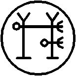

Otuz altıncı İsim LUGALABDUBUR’dur
TIAMAT’ın Tanrılarının Yok edicisidir. Onun Birliklerinin Galibidir. KUTULU’yu Uçuruma zincirlemiştir. AZAG-THOTH ile mahirce savaşmıştır. Muhteşem bir Savunucu ve muhteşem bir Saldırıcıdır. Kelimesi AGNIBAAL’dir ve mührü budur:
